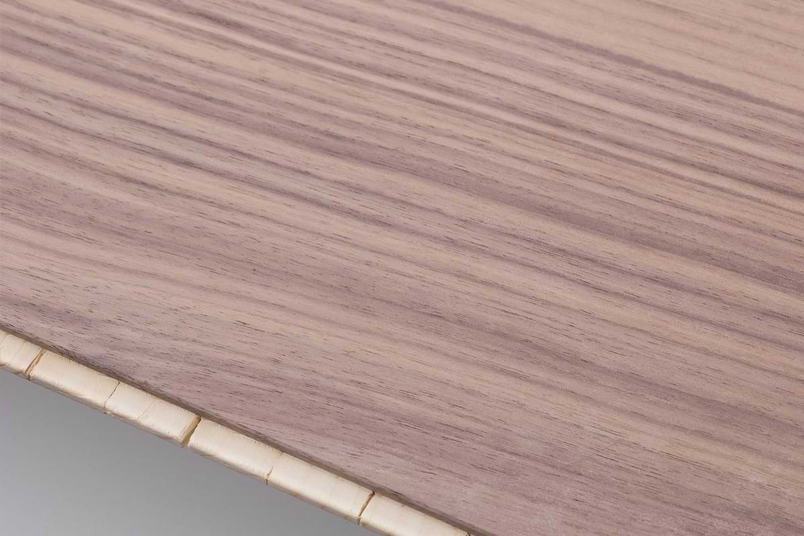

Galimberti, nel legno da fine '800
+
Progetto legno lombardo
+
Uptown, un'attenzione al cliente inusuale
=
una sinergia unica.
Vieni in stabilimento, a 30 min da Uptown produrremo il tuo pavimento.
Insieme ai ns. tecnici del legno creerai il tuo pavimento come lo immagini.


I boschi ci accolgono da sempre, impegnati a trasformare l'anidride carbonica in legno. Gli alberi maturi ci offrono il loro legno lasciando spazio ai nuovi nati.
Segati in tavole e stagionati li trasformiamo in pavimenti.
La valorizzazione del legno locale contribuisce alla manutenzione dei boschi, polmoni verdi del nostro territorio.
E' un progetto a cui pensavamo da tempo e lo possiamo ora avviare anche grazie ad Attilio di Cunto di Uptown, che ha creduto in questo progetto concreto e locale.
Inoltre, come ogni realizzazione in legno, anche il pavimento sequestra CO2.